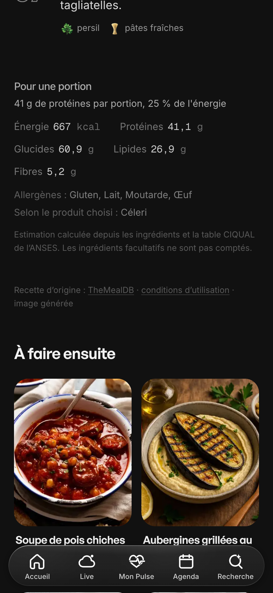
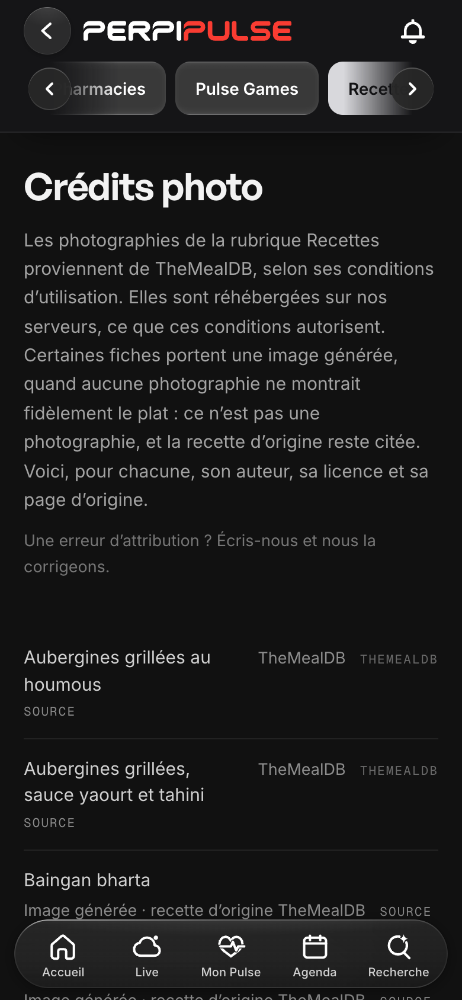

Recettes — la version du 31/10/2026
Branche chantier/recettes-themealdb · rien n'est fusionné ni publié en production · captures prises sur iPhone simulé (390 px), sur le build de la branche.
Les deux aperçus en direct
- Recettes — l'application de la branche (lecture seule, servie par le Mac tant qu'il reste allumé).
- Autour de moi — l'aperçu de l'autre chantier, tenu par sa propre session.
Ce qui change dans cette version
- Visuels — onze photos de plats générées (fal.ai, 1,86 € sur 2 € autorisés), chacune relue contre sa liste d'ingrédients : penne et ribollita réellement véganes, curry de haricots et chili avec leur riz, les six repas complétés dont l'accompagnement est dans l'assiette, et le Stroganoff sur ses tagliatelles. Créditées « image générée », la recette d'origine TheMealDB toujours citée. Les pancakes gardent leur vraie photo : c'est la fiche qui suit désormais ce qu'elle montre (myrtilles, sirop d'érable). Quatre objets nouveaux : oignon nouveau, minuteur d'Express, myrtille, sirop d'érable. À valider à l'œil avant toute mise en production.
- Repas complets — treize repas reçoivent leur accompagnement, chiffré et cuisiné : Stroganoff et tagliatelles, boulettes d'agneau sur semoule, riz du curry de poulet, du bar, des pilons, de la ratatouille et du baingan bharta, boulgour des latkes, pain de la soupe, de la shakshuka, du pisto et de la salade de saumon. Les courses et la nutrition suivent. Un test garde que tout repas publié est complet.
- Protéiné — 20 g ET 20 % de l'énergie sur le repas complet ; l'accueil dit seulement « 41 g de protéines », la fiche ajoute la part d'énergie.
- Allergènes — calculés sur la composition exacte de chaque ingrédient ; ce qui dépend du produit acheté est dit à part (« Selon le produit choisi ») ; le produit prévu est déclaré (tagliatelles aux œufs, feuilles de lasagne sans œuf).
- Magasins à proximité — horaires et itinéraire, rien de plus.
Les captures
 Accueil — Cuisine, choix « Protéiné »
Accueil — Cuisine, choix « Protéiné » Page Recettes — besoins illustrés (minuteur d'Express)
Page Recettes — besoins illustrés (minuteur d'Express) Fiche — penne all'arrabbiata (photo générée, végane)
Fiche — penne all'arrabbiata (photo générée, végane) Fiche — curry de poulet et son riz
Fiche — curry de poulet et son riz Fiche — Bœuf Stroganoff et tagliatelles (image générée)
Fiche — Bœuf Stroganoff et tagliatelles (image générée)
Crédit — « Recette d'origine : TheMealDB · image générée » Fiche — pancakes, framboises et myrtilles (photo TheMealDB)
Fiche — pancakes, framboises et myrtilles (photo TheMealDB) Pancakes — ingrédients : myrtille, sirop d'érable
Pancakes — ingrédients : myrtille, sirop d'érable
Page des crédits — images générées comptées à part Préparation — étapes numérotées
Préparation — étapes numérotées Préparation — les tagliatelles, la fin
Préparation — les tagliatelles, la fin Nutrition et allergènes du repas complet
Nutrition et allergènes du repas complet Ma semaine
Ma semaine Ma semaine — les repas
Ma semaine — les repas Courses
Courses Courses — rayons, pâtes fraîches et riz
Courses — rayons, pâtes fraîches et riz Magasins à proximité
Magasins à proximité Les onze photos générées
Les onze photos générées Les objets : oignon nouveau, minuteur, myrtille, sirop d'érable
Les objets : oignon nouveau, minuteur, myrtille, sirop d'érable Vérification — la lentille corail dans Courses
Vérification — la lentille corail dans Courses Vérification — une recette retirée, ouverte depuis la semaine
Vérification — une recette retirée, ouverte depuis la semaine Vérification — le titre entier du bandeau « En cuisine »
Vérification — le titre entier du bandeau « En cuisine »


Limites
- Les photos générées sont des images de synthèse, dites comme telles dans chaque fiche ; elles ont été relues contre la recette, pas photographiées.
- Les onze images générées attendent ta validation à l'œil avant toute mise en production (cadrage §4.1.4).
- Les fiches récentes restent marquées « estimées » tant qu'elles n'ont pas été cuisinées.
- Aucun prix n'est comparé : ce chantier-là reste distinct.